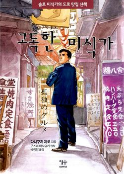

일본의 만화. 스토리는 쿠스미 마사유키, 작화는 타니구치 지로가 담당했다.
| 고독한미식가 | |
|---|---|
| 장르 | 요리 |
| 작가 | 스토리:쿠스미 마사유 작가:다니구치 지로 |
수입물품 유통업자(수입잡화상)인 이노가시라 고로가 일을 마치고 퇴근하거나, 그 날 일이 잘 됐 을 때 자축, 일이 잘 안됐을 때 위로, 단순히 시간이 남아돌거나, 허기가 지거나! 지나가다 흥미가 발동해서 등, 일상의 빈 자투리 시간들을 이용해 다양한 식당에서 다양한 음식들을 먹으며 혼자 미 식을 하는 내용의 단순한 스토리의 일상물 만화로 담백한 구성과 내용이 잔잔하고 구수한 재미를 준 다. 이 작품의 묘미는 음식의 맛과 향을 고로의 생각을 통해 묘사하는 부분인데, 이는 마치 고로가 음식과 대화를 나누는 것처럼 보인다.